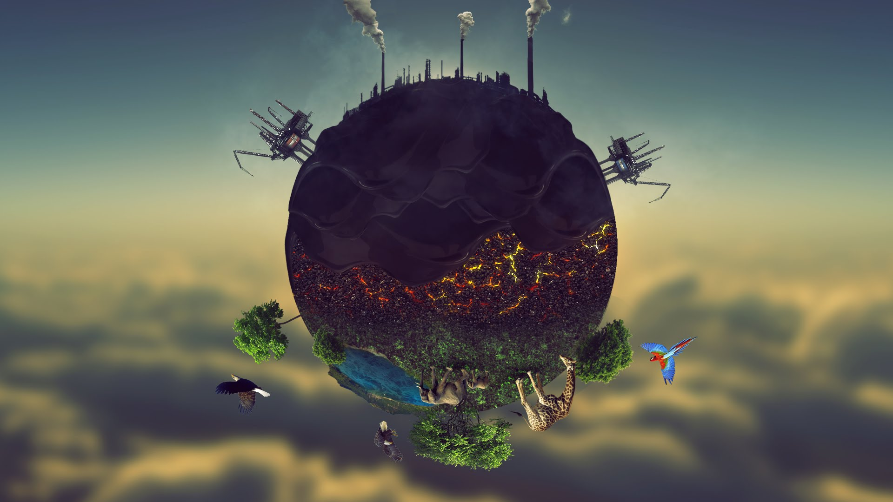

ZNEČISTENIE
Znečistenie životného prostredia alebo (najmä ak je kontaminant cudzorodá látka) kontaminácia životného prostredia znamená uvoľnenie environmentálnych kontaminantov do životného prostredia resp. ich prítomnosť v životnom prostredí.
Hlavné typy znečistenia:
- Znečistenie vzduchu, vypúšťanie častíc chemikálií do atmosféry. Medzi typické príklady patrí oxid uhoľnatý, oxid uhličitý, oxid siričitý, freóny a oxidy dusíka. Medzi producentov patria priemysel (bodové zdroje), ľudské sídla (plošné zdroje) a dopravné prostriedky (líniové zdroje).
- Znečistenie vody povrchovým odtokom a presakovaním do podzemnej vody.
- Kontaminácia pôdy vzniká buď znečistením povrchu pôdy, alebo porušením podzemných nádrží. Medzi najvýznamnejšie látky znečisťujúce pôdu patria uhľovodíky, ťažké kovy, MTBE (metyl-terc.-butyléter - aditívum do benzínu, v súčasnosti sa už prestáva používať kvôli jeho karcinogenite), herbicídy, pesticídy a chlórované uhľovodíky.
- Rádioaktívne znečistenie- bolo zistené vďaka pokrokom atómovej fyziky a chémie v 20. storočí.
- Hlukové znečistenie, ktoré zahrňuje hluk z podzemných komunikácií, hluk lietadiel a hluk priemyslu.
- Svetelné znečistenie, zahrňujúce nadužívanie svetelných zdrojov a presvetľovanie interiérov.
- Zníženie estetickej hodnoty, zaň je obvykle považovaný výskyt objektov, ako sú: vedenie vysokého napätia, bilboardy pozdĺž ciest, narušený reliéf (pozostatky povrchovej ťažby), povrchové skládky odpadu, a pod.
- Tepelné znečistenie, ktoré zahŕňa všetky zmeny teploty vodných telies, spôsobené ľudským vplyvom.
Denne vymiera až 100 vzácnych rastlinných a živočíšnych druhov . Na hraniciach Rwandy, Ugandy a Zairu v Afrike žije niekoľko 100 posledných horských goríl. Žijú v dažďových pralesoch ktoré ničia ľudia. Znečistenie vzniká ak sa škodlivé látky dostávajú do životného prostredia v takých veľkých množstvách, že škodia ľudom, živočíchom, rastlinám i prírodnému prostrediu